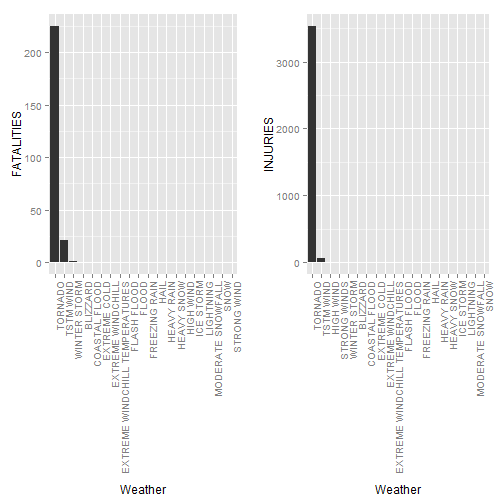

date: 21 Jun 2015
The code for this shiny application is based on the PeerAssment for Courseras Reproducible Research.
One of the questions needed to be answered is The following question:Across the United States, which types of wheather events are most harmful with respect to population health?
When analysing data it could be useful to see what impact it has to include a different number of wheather events in the analysis
For this purpose a shiny application is written to make the number of wheater events a variable.Please note that the code included in this presentation is redundant. Not every shiny code detail is explained.
Please see github repository for shiny app ui.R and server.R code
library(R.utils); library(ggplot2);library(plyr);library(gridExtra); require(gridExtra)
#Use reduced data for testing purposes instead original (143 MB)
stormData <- read.csv("repdata-data-StormData-reduced.csv", sep = ",")
#data filter to reduce data
fieldFilter <- function(field, data, topNbOfWheatherTypes) {
index <- which(colnames(data) == field)
aggregate <- aggregate(data[, index], by = list(data$EVTYPE), FUN = "sum")
names(aggregate) <- c("EVTYPE", field)
aggregate <- arrange(aggregate, aggregate[, 2], decreasing = T)
aggregate <- head(aggregate, n = topNbOfWheatherTypes)
return(within(aggregate, EVTYPE <- factor(x = EVTYPE, levels = aggregate$EVTYPE)))
}
#number of events, this is made variable in the shiny application by using
# slider input from ui.R and using
# events <- input$events
#For reproducible presentation purposes the number is fixed to 25 so that a Slide can be plotted.
#For this prentation assume event=20
events<-20
#create fatalities and injuries data for top 20 storm data Events and print the diagram
fatalities <- fieldFilter("FATALITIES", stormData, events)
injuries <- fieldFilter("INJURIES", stormData, events)
